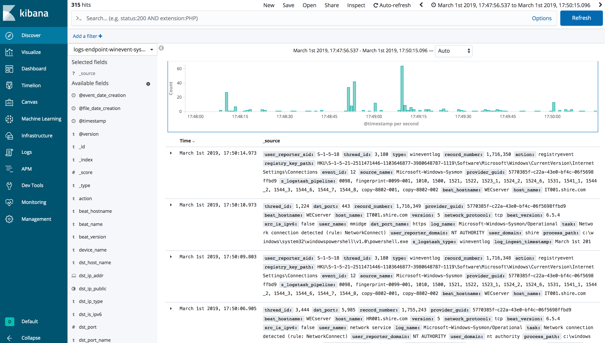

The Hunting ELK (HELK)¶
The Hunting ELK or simply the HELK is one of the first open source hunt platforms with advanced analytics capabilities such as SQL declarative language, graphing, structured streaming, and even machine learning via Jupyter notebooks and Apache Spark over an ELK stack. This project was developed primarily for research, but due to its flexible design and core components, it can be deployed in larger environments with the right configurations and scalable infrastructure.

Requirements¶
Python : Python is a programming language that lets you work quickly and integrate systems more effectively.
Docker CE : Docker Community Edition (CE) is ideal for developers and small teams looking to get started with Docker and experimenting with container-based apps (Installed by HELK).
Docker Compose : a tool for defining and running multi-container Docker applications (Installed by HELK).
Install HELK¶
Download the HELK. Make sure you have enough memory to run the basic build. You can run it with 5-6GB of RAM now (More information here).
$ git clone https://github.com/Cyb3rWard0g/HELK.git
$ cd HELK/docker
Update HELK’s basic docker-compose file. You just need to add the following right before ulimits. Similar to how it is set for the Logstash docker service
ports:
- "9200:9200"
Run the HELK’s install script
$ sudo ./helk_install
Use the defaults (Option 1 and Basic license)
**********************************************
** HELK - THE HUNTING ELK **
** **
** Author: Roberto Rodriguez (@Cyb3rWard0g) **
** HELK build version: v0.1.7-alpha02262019 **
** HELK ELK version: 6.6.1 **
** License: GPL-3.0 **
**********************************************
[HELK-INSTALLATION-INFO] HELK being hosted on a Linux box
[HELK-INSTALLATION-INFO] Available Memory: 12541 MBs
[HELK-INSTALLATION-INFO] You're using ubuntu version xenial
*****************************************************
* HELK - Docker Compose Build Choices *
*****************************************************
1. KAFKA + KSQL + ELK + NGNIX + ELASTALERT
2. KAFKA + KSQL + ELK + NGNIX + ELASTALERT + SPARK + JUPYTER
Enter build choice [ 1 - 2]: 1
[HELK-INSTALLATION-INFO] HELK build set to 1
[HELK-INSTALLATION-INFO] Set HELK elastic subscription (basic or trial): basic
[HELK-INSTALLATION-INFO] Set HELK IP. Default value is your current IP: 192.168.64.138
[HELK-INSTALLATION-INFO] Set HELK Kibana UI Password: hunting
[HELK-INSTALLATION-INFO] Verify HELK Kibana UI Password: hunting
[HELK-INSTALLATION-INFO] Installing htpasswd..
[HELK-INSTALLATION-INFO] Installing docker via convenience script..
[HELK-INSTALLATION-INFO] Installing docker-compose..
[HELK-INSTALLATION-INFO] Checking local vm.max_map_count variable and setting it to 4120294
[HELK-INSTALLATION-INFO] Building & running HELK from helk-kibana-analysis-basic.yml file..
Download Mordor Dataset¶
Download the mordor repo and choose your technique:
$ curl -LJO https://raw.githubusercontent.com/OTRF/mordor/master/datasets/small/windows/credential_access/host/empire_dcsync_dcerpc_drsuapi_DsGetNCChanges.zip
% Total % Received % Xferd Average Speed Time Time Time Current
Dload Upload Total Spent Left Speed
100 639k 100 639k 0 0 1797k 0 --:--:-- --:--:-- --:--:-- 1792k
Decompress the specific mordor log file
$ unzip empire_dcsync_dcerpc_drsuapi_DsGetNCChanges.zip
Archive: empire_dcsync_dcerpc_drsuapi_DsGetNCChanges.zip
inflating: empire_dcsync_dcerpc_drsuapi_DsGetNCChanges_2020-09-21185829.json
Ship Data to HELK¶
$ mordor/scripts/data-shippers/Mordor-Elastic.py --url http://localhost:9200 inputs empire_dcsync_dcerpc_drsuapi_DsGetNCChanges_2020-09-21185829.json
If you are using a fresh HELK install, then you should not have hundres of events in a few indices. Without accessing the Kibana interface, you can simply access the helk-elasticsearch docker container and use its APIs to see data available in it:
sudo docker exec -ti helk-elasticsearch bash
[root@6f8ff404383a elasticsearch] curl http://localhost:9200/_cat/indices?v
Output Example:
health status index uuid pri rep docs.count docs.deleted store.size pri.store.size
green open .monitoring-logstash-7-2020.09.04 0wtkIPo-RxCZ1qRzxQTBoA 1 0 1085 0 34.9mb 34.9mb
green open .monitoring-kibana-7-2020.09.04 O73EUP4iREu1ZhfKI9iFrQ 1 0 5 0 90.8kb 90.8kb
green open logs-endpoint-winevent-additional-2019.03.01 GKlzhBx5RAii6hlHe7aTmQ 1 0 21 6 110.8kb 110.8kb
green open .apm-agent-configuration HfOnH3kOQgacIKGUNJWq9w 1 0 0 0 283b 283b
yellow open mitre-attack-2020.09.04 IIc2OSzqQc6NVZnOfQx-dQ 1 1 8624 0 25.7mb 25.7mb
green open .kibana_1 TiRgVYzYTByIDTPmh8afNA 1 0 276 2 274.9kb 274.9kb
green open logs-endpoint-winevent-sysmon-2019.03.01 qpoKrgjCQHKaNGSyPzGAIQ 1 0 323 70 596.3kb 596.3kb
green open logs-endpoint-winevent-sysmon-1990.12.18 QywJ1MqmSxKT4jRK0BiynQ 1 0 1 1 55.1kb 55.1kb
green open .monitoring-es-7-2020.09.04 plh8oVR1QomWHr0QxPTxag 1 0 17 1 1.1mb 1.1mb
green open .kibana_task_manager_1 s5b-0WjHR4OgXNtITmqDJg 1 0 2 0 34kb 34kb
green open logs-endpoint-winevent-security-2019.03.01 wK9G1vP5Qiy9HLLn6Q2tIw 1 0 178 265 504kb 504kb
green open logs-endpoint-winevent-powershell-2019.03.01 CziOhDQnT3-KhWm1FjGbwg 1 0 4583 0 39.8mb 39.8mb
green open logs-endpoint-winevent-system-2019.03.01 kgVBuZiETjCQOZmyOhIlBA 1 0 62 4 201.1kb 201.1kb
green open logs-endpoint-winevent-wmiactivity-2019.03.01 Z_umc3lEQHyBfNWIRAcWFw 1 0 14 0 49.5kb 49.5kb
Additional Access¶
If your HELK instance is only accessible via SSH, you can create port forwarding with the following command to access the Kibana interface:
ssh -N -L 8080:127.0.0.1:80 -L 4043:127.0.0.1:443 <USER>@<IP-OF-HELK-SERVER>
Explore Data¶
Browse to your Kibana Discover view and start going through the data

You could look for potential DCSync actvity from a non-Domain-Controller account with the following query in Kibana:
event_id:4662 AND object_properties:("*1131f6aa-9c07-11d1-f79f-00c04fc2dcd2*" OR "*1131f6ad-9c07-11d1-f79f-00c04fc2dcd2*" OR "*89e95b76-444d-4c62-991a-0facbeda640c*")